Nenhum prazo vence no escuro.
Alvarás, certidões, licenças, contratos e seguros com vencimento, responsável, revisão e histórico completo. O sistema avisa antes de vencer.
Produto próprio · versão 2026.10
A operação da empresa num só acesso. Documentos e prazos, arquivo de papel, manutenção da frota, vendas, compras, estoque e financeiro trabalham ligados, e os Indicadores mostram o resultado de tudo no mesmo painel.
Indicadores
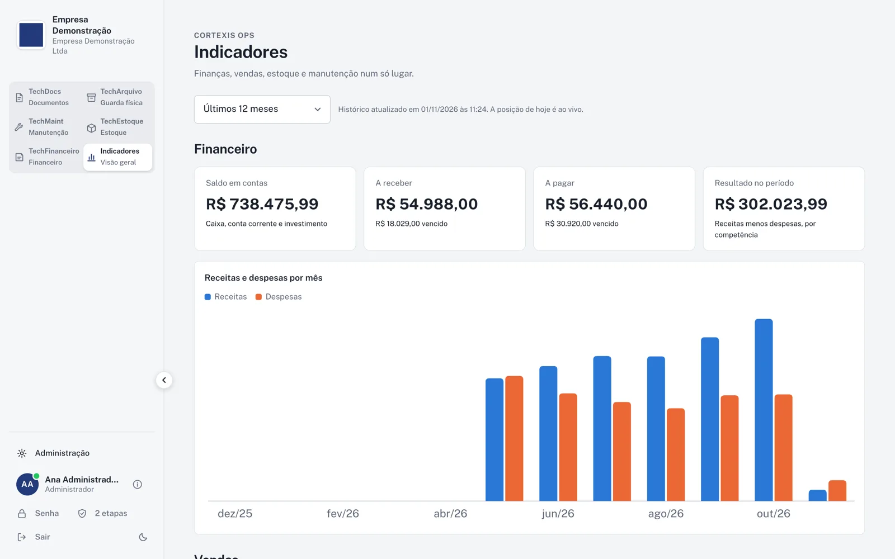
TechFinanceiro
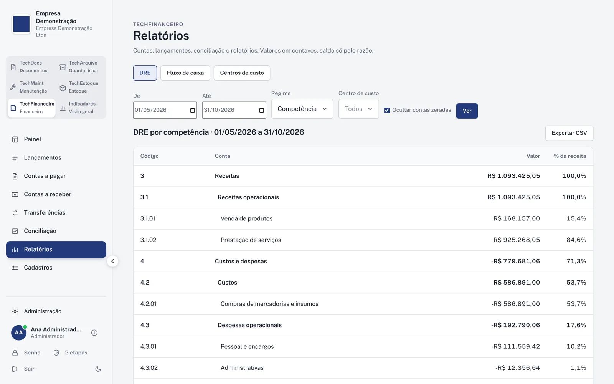
TechEstoque
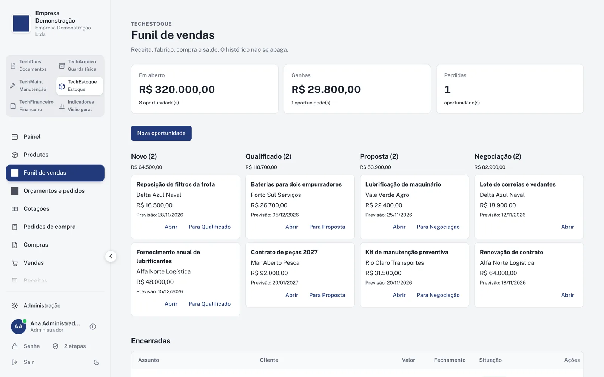
Seis áreas, um só acesso
Alvarás, certidões, licenças, contratos e seguros com vencimento, responsável, revisão e histórico completo. O sistema avisa antes de vencer.
Empresa, sala, corredor, armário, prateleira e caixa. Empréstimos, prazos de guarda e eliminação com aprovação, ligados ao documento digital.
Embarcações, veículos e máquinas, com planos, avarias e solicitações, ordens de serviço passo a passo, tripulação e custos.
Funil de vendas, orçamentos e pedidos, cotações e compras, fabricação por receita e saldo por custo médio, num cadastro único de itens.
Contas, lançamentos, conciliação do extrato, DRE, fluxo de caixa e fechamento do mês. Compra, venda e OS chegam como contas a pagar ou a receber.
Finanças, vendas, funil, estoque, compras e manutenção com gráficos por mês e os maiores clientes, produtos e fornecedores.
Indicadores
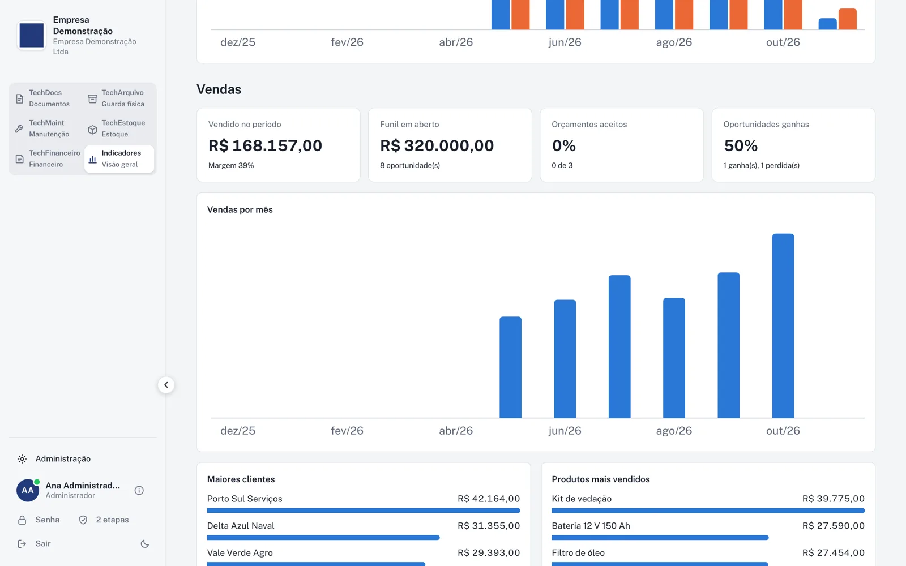
TechFinanceiro
TechEstoque
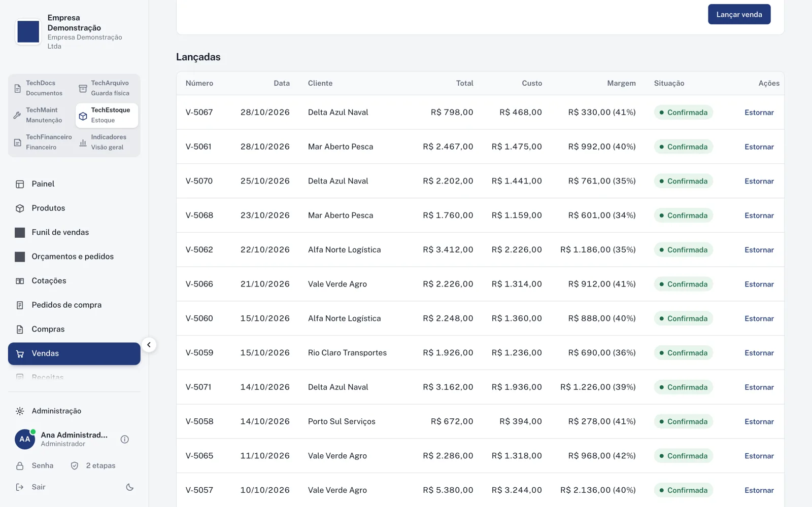
TechDocs
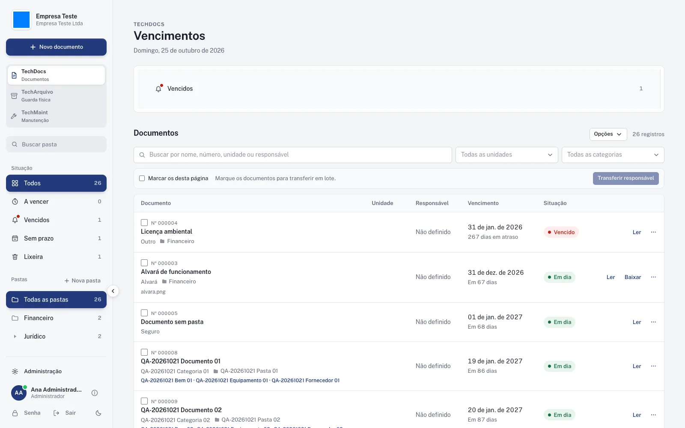
TechArquivo
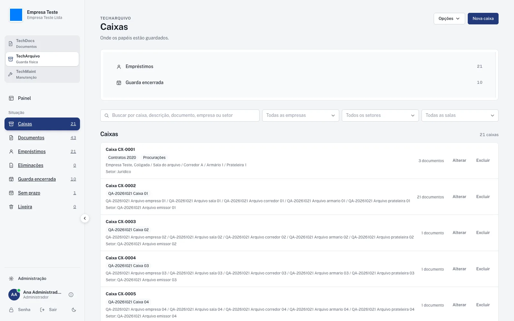
TechMaint
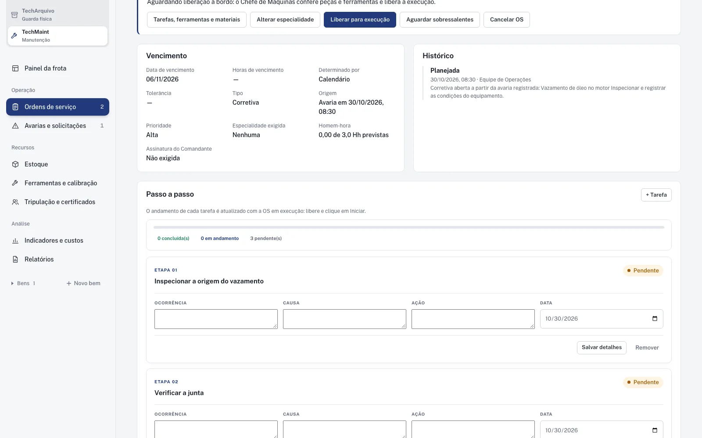
Segurança e governança
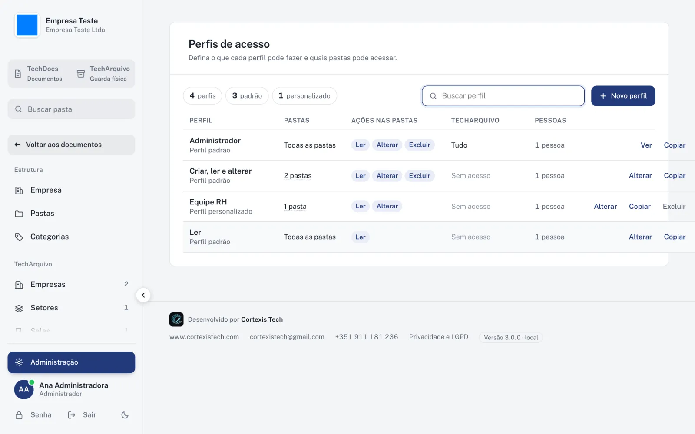
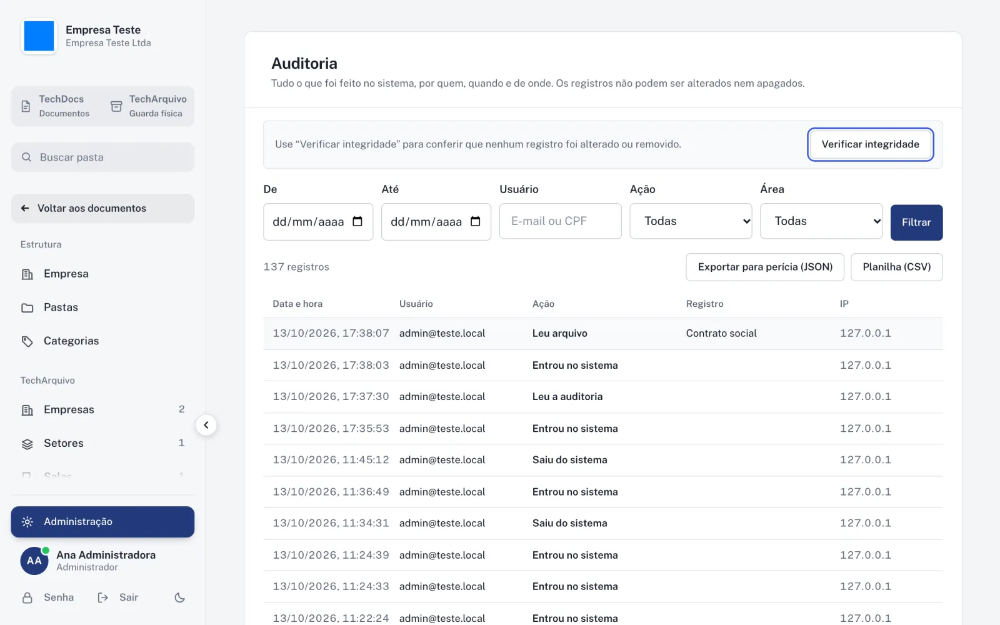
Ler, alterar e excluir definidos pasta a pasta em cada perfil. A regra é conferida no banco de dados, não só na tela.
Cada ação fica registrada com usuário, data, IP e o antes e depois. Os registros são encadeados por hash e não podem ser apagados.
Cada arquivo recebe um SHA-256 no envio. A conferência aponta qualquer arquivo trocado depois.
Cópia completa toda madrugada, com 30 dias de histórico, download sempre cifrado e restauração pela própria tela.
Verificação por aplicativo autenticador obrigatória, sessão com limite de 12 horas e encerramento após 20 minutos sem uso.
Várias empresas no mesmo sistema, cada uma separada das demais no banco de dados, com política de privacidade própria.
No celular
Consultar um prazo, abrir um arquivo, acompanhar a frota ou ver o painel do financeiro funciona no Android, no iPhone e no iPad.
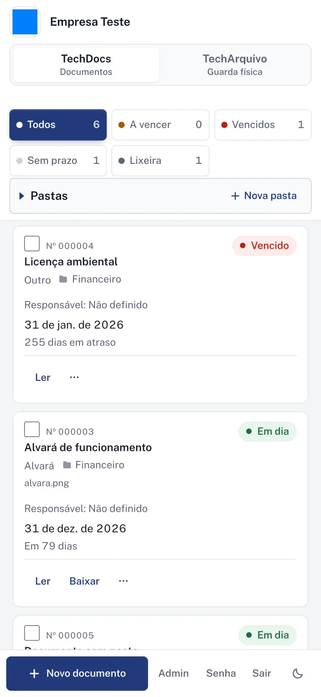
Filme
A gente mostra o Cortexis Ops com a sede, as filiais e os módulos que fazem sentido para vocês.